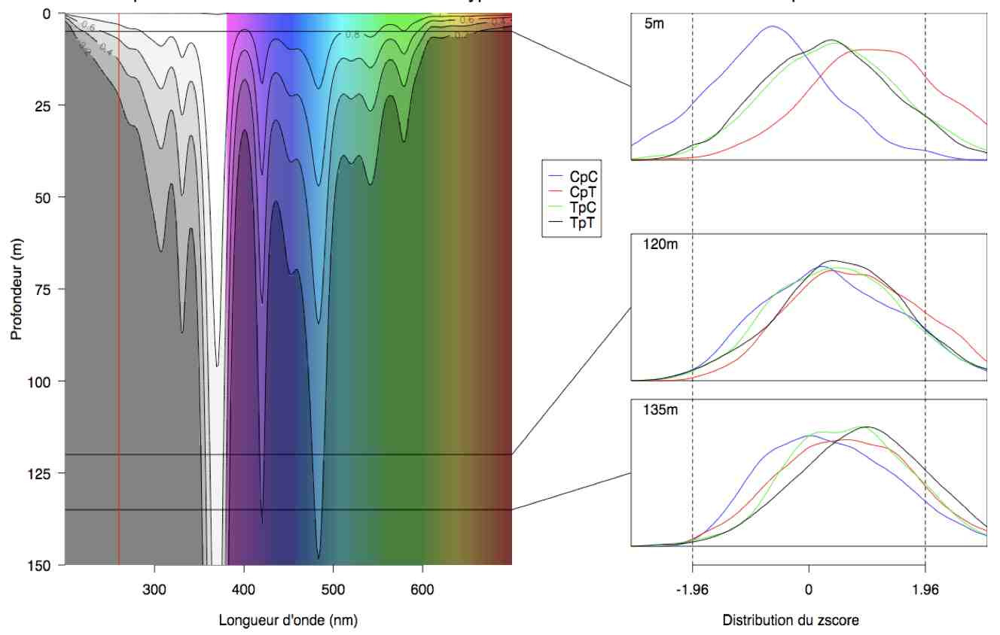

| waterabs {seqinr} | R Documentation |
The absorption of light by water is highly dependent on the wavelength, this dataset gives the absorption coefficients from 200 to 700 nm.
data(waterabs)
A data.frame with 2 columns:
wavelength in nm
absorption coefficient in 1/cm
Data were compiled by Palmeira (2007) from the cited references.
The example section allows to reproduce the left part of figure 2.7 from Palmeira (2007):

Palmeira, L. (2007) Analyse et modélisation des dépendances entre
sites voisins dans l'évolution des séquences d'ADN, PhD thesis,
Université Claude Bernard - Lyon I.
Litjens R. A., Quickenden T. I. and Freeman C. G. (1999). Visible and
near-ultraviolet absorption spectrum of liquid water. Applied Optics,
38:1216-1223.
Quickenden T. I. & Irvin J. A. (1980). The ultraviolet absorption spectrum
of liquid water. The Journal of Chemical Physics, 72:4416-4428.
citation("seqinr")
data(waterabs)
d <- 100*seq(from = 0, to = 150, by = 1) # depth in cm
lambda <- waterabs$lambda # wavelength in nm
abs <- waterabs$absorption # absorption coefficient cm-1
#
# Smooth signal with cubic splines
#
tmp <- spline(lambda, abs, n = 255)
lambda <- tmp$x
abs <- tmp$y
zun <- sapply(abs,function(x) 10^(-x*d))
z <- sapply(nrow(zun):1, function(x) zun[x,])
#
# Set up world coordinates:
#
plot.new()
plot.window(xlim = range(lambda), ylim = range(d), xaxs = "i", yaxs = "i")
#
# Annotate:
#
title(ylab = 'Depth under water surface (m)', xlab = "Wavelength (nm)",
main = "Light absorption by the water column")
axis(2 , at = seq(0, 15000, l = 7),
labels = rev(c("0","25","50","75","100","125","150")), las = 1)
axis(1,at=(3:6)*100,labels= TRUE)
#
# Show me rainbow colors:
#
alpha <- 1
coul=c(rep(rgb(1,1,1, alpha = alpha), 181),
rev(hsv(h=seq(0,5/6,l=320),alpha = alpha)))
rect(seq(200,699), 0, seq(201,700), 15000 , col = coul, border = coul)
#
# Grey scale:
#
ngris <- 5
image(x = lambda, y = d, z = z, col = rgb(1:ngris, 1:ngris, 1:ngris, alpha = 0.7*(ngris:1),
max = ngris),
axes = F, add = TRUE,
breaks = seq(from = min(z), to = max(z), length = ngris + 1))
#
# Contour lines:
#
contour(x = lambda, y = d, z = z, add = TRUE, drawlabels = TRUE,labcex= 0.75,
col='black',
levels = seq(from = min(z), to = max(z), length = ngris + 1))
box()